걱정하고
탈도 많았던 사랑니,
여문치과를
만나보세요.
매복 위치가 신경과 가까운 사랑니는 영상 검사로 관계를 확인하고 발치 방법과 주의점을 신중하게 정합니다.
복잡한 사랑니는 무리하게 진행하지 않고 영상 검사 결과에 따라 가능한 치료 기관과 방법을 안내합니다.
여문치과
실시간 사랑니 발치 현황
2025년 07월 기준
서울본점 (여문본점) 발치수
나루점 발치수
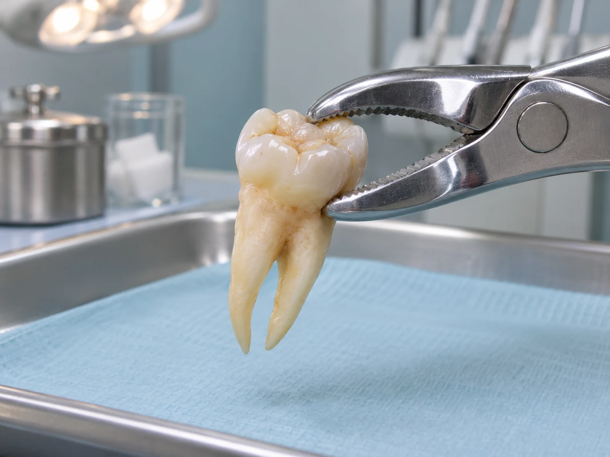
대학 병원을 권유 받으신 분들이
믿고 선택한 치과
사랑니가 비스듬히 나거나 잇몸 안에 묻혀 있으면 주변 치아와 신경의 위치를 확인해 발치 순서와 주의점을 정합니다. 추가 진료가 필요하다는 소견을 들었다면 검사 자료와 의뢰 내용을 지참해 상담하세요. 진료 후 만족하며 돌아가셨습니다.
사랑니 발치, 두려우신가요?
통증, 걱정하지 마세요.
사랑니를 뽑을 때의 통증이 걱정된다면 현재 상태와 마취 방법, 회복 과정에 대해 먼저 상담할 수 있습니다. 통증을 최소화할 수 있는 솔루션을 적용하고 있습니다.
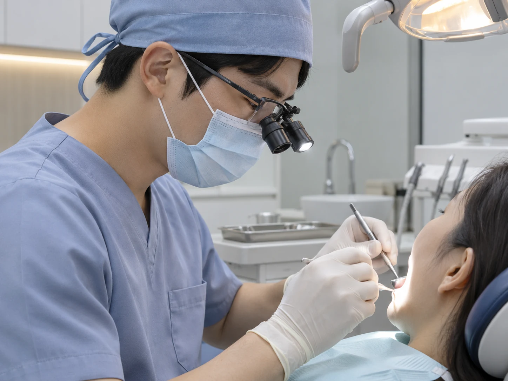
사랑니 발치 전 진단과 설명을 충분히 듣고 결정하세요.
사랑니 발치에 대한 지대한 관심,
사랑니의 위치와 뿌리 모양을 살핀 뒤 발치 방법을 계획합니다.
영상으로 위치와 주변 조건을 확인합니다.
안 뺀
사랑니는 있어도,
못 뺀
사랑니는 없습니다.
사랑니의 난이도에 따라 발치 계획이나 상급 진료 의뢰가 필요할 수 있습니다.
굳이 번거롭게
대학병원을
가지 않아도 됩니다.
사랑니 발치 가능 여부와 시기는 영상 검사와 전신 상태를 검토해 정합니다.
| 대학병원 사랑니 진료 |
여문치과 사랑니 진료 |
|---|---|
| 기본 3개월 이상의 대기 발생 | 당일 내원하여 당일 발치 가능 |
| 보다 비싼 진료 비용 | 대학병원 보다 합리적인 진료 비용 |
| 의료진 배정에 따라 진료 진행 | 외과 담당 대표원장이 직접 발치 |
사랑니 발치 사례 01
“사랑니가 썩었어요!”
정기 검진에서 사랑니의 충치나 주변 염증이 확인되면 위치와 손상 정도를 살핀 뒤 치료 방법을 안내합니다.
발치 전
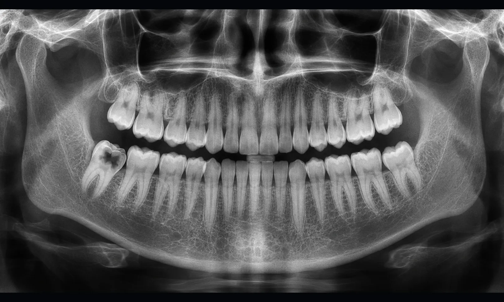
2025년 01월
발치 후
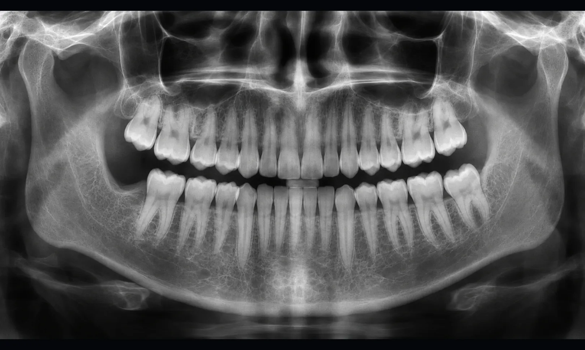
2025년 01월
사랑니 발치 사례 02
“아래 사랑니가 아파요!”
아래턱에 완전히 묻힌 사랑니는 뿌리와 주변 신경을 확인한 후 필요하면 치아를 나누어 제거합니다.
발치 전
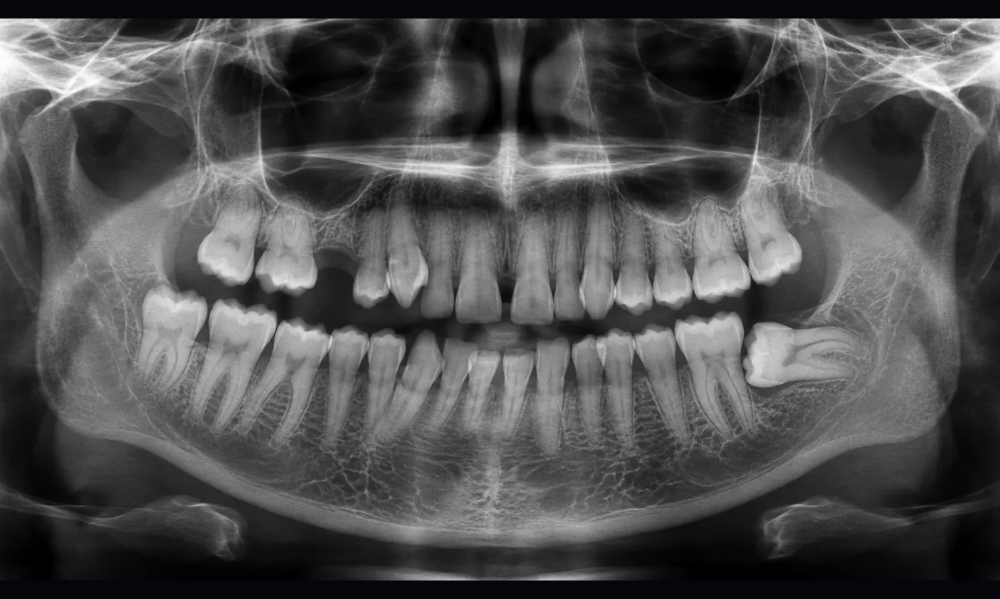
2023년 12월
발치 후
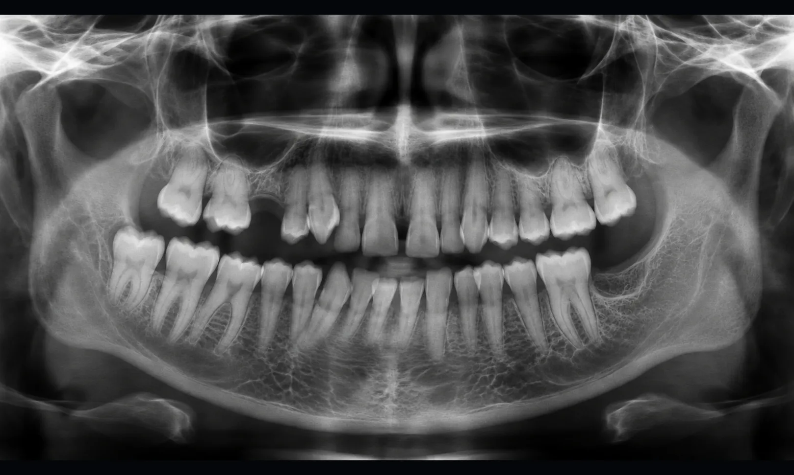
2023년 12월
사랑니 발치 사례 03
“사랑니 4개를 발치하고 싶어요”
여러 사랑니를 발치할 때는 치아별 위치와 상태를 확인한 다음, 한 번에 진행할지 나누어 치료할지 결정합니다.
발치 전
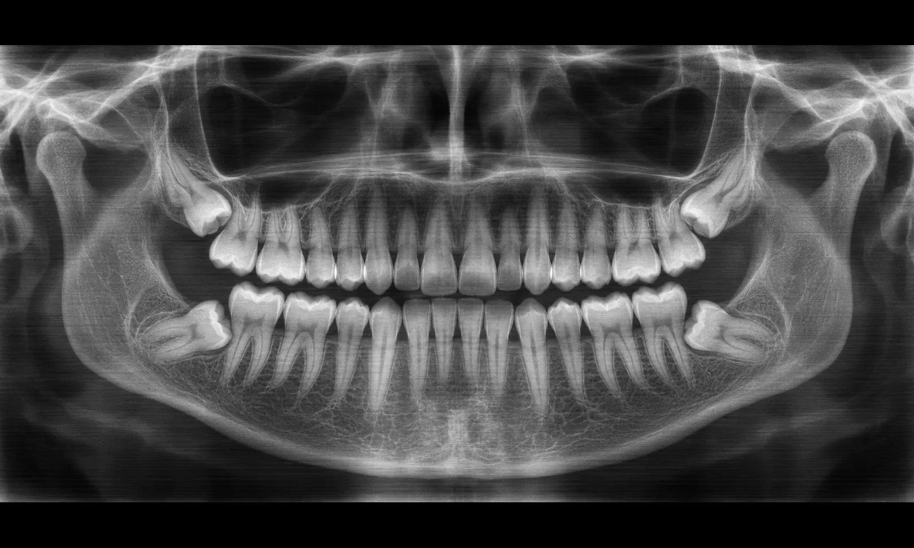
2024년 06월
발치 후
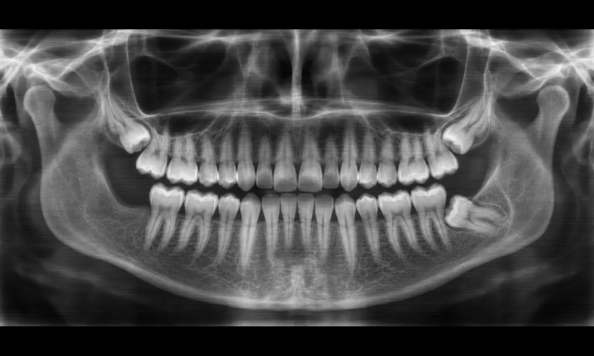
2024년 06월
사랑니 발치 사례 04
“발치가 두려운데 진정 치료를 상담할 수 있을까요?”
발치에 대한 긴장과 치아 위치를 확인한 뒤, 진정요법을 포함한 선택지를 설명하고 진행 여부를 함께 정합니다.
발치 전
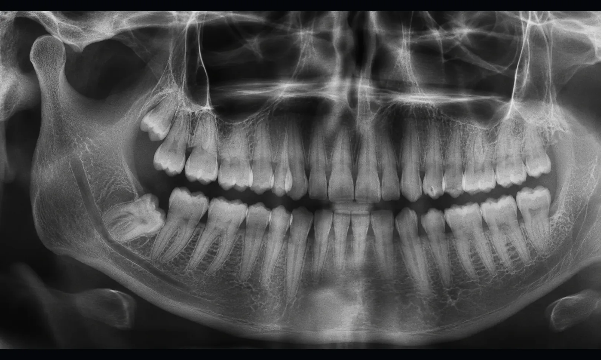
2023년 11월
발치 후
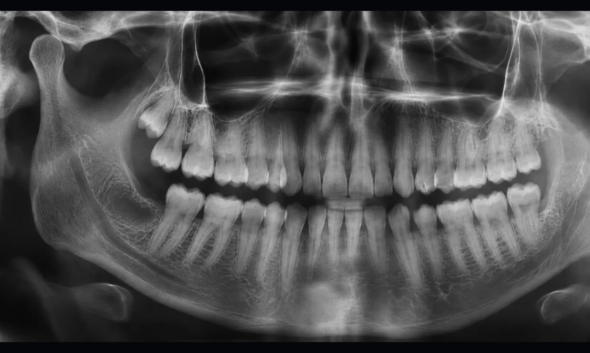
2023년 11월
사랑니 발치 사례 05
“교정 치료를 받는 중에도 사랑니를 뽑을 수 있나요?”
교정 중 사랑니 처치가 필요한 경우에는 치아 이동 계획과 발치 시점을 교정 담당자와 함께 조율합니다.
발치 전
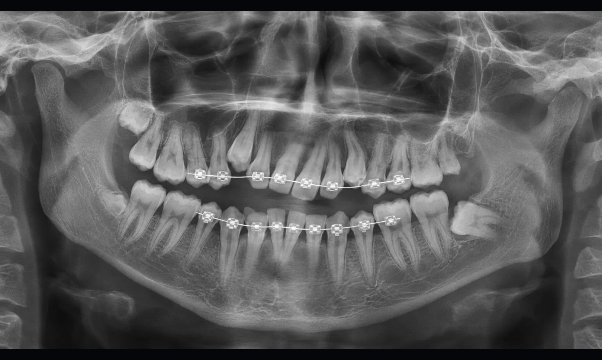
2023년 04월
발치 후
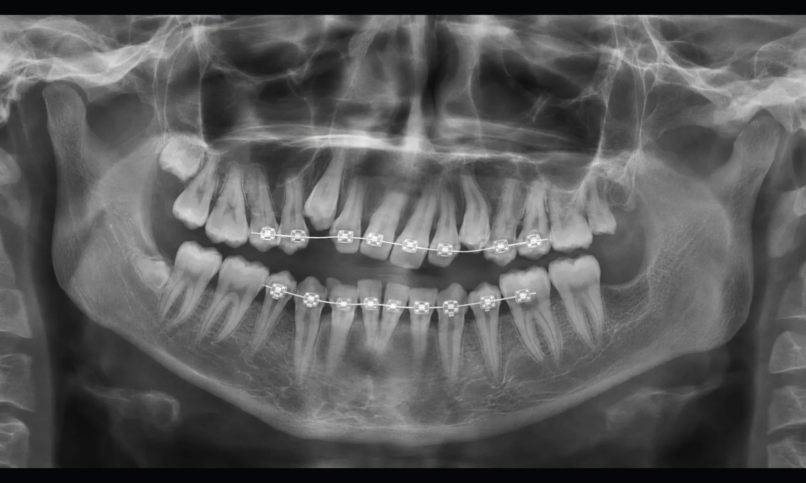
2023년 11월
여문치과
사랑니 발치 Q&A
의료진이 자주 받는 질문을 항목별로 설명합니다.
마취 중에는 감각이 둔해지지만 압박감은 남을 수 있습니다. 마취가 풀린 뒤 불편이 생기면 처방과 안내받은 복용법을 따르세요.
발치 뒤에는 출혈과 염증 위험을 줄이도록 음주와 흡연을 삼가고, 회복 기간과 관리 방법은 의료진의 안내를 따릅니다.
사랑니 발치 비용은 보험 적용 여부와 매복 상태, 필요한 처치에 따라 달라질 수 있어 진단 뒤 확인합니다.
사랑니 발치 전에는 치아의 방향과 뿌리 모양을 살피고 마취와 사후 관리 방법을 설명해 불안과 통증에 대비합니다.
발치 방법과 절개 범위는 사랑니의 위치에 따라 달라집니다. 시술 뒤에는 지혈과 붓기 관리 등 회복 지침을 안내합니다.
당일 사랑니 발치, 예약하러 가기
사랑니 발치 가능 여부와 시기는 영상 검사와 전신 상태를 검토해 정합니다.